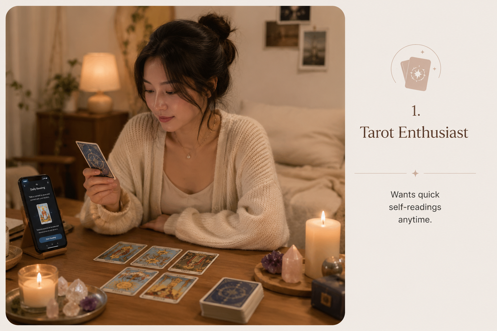
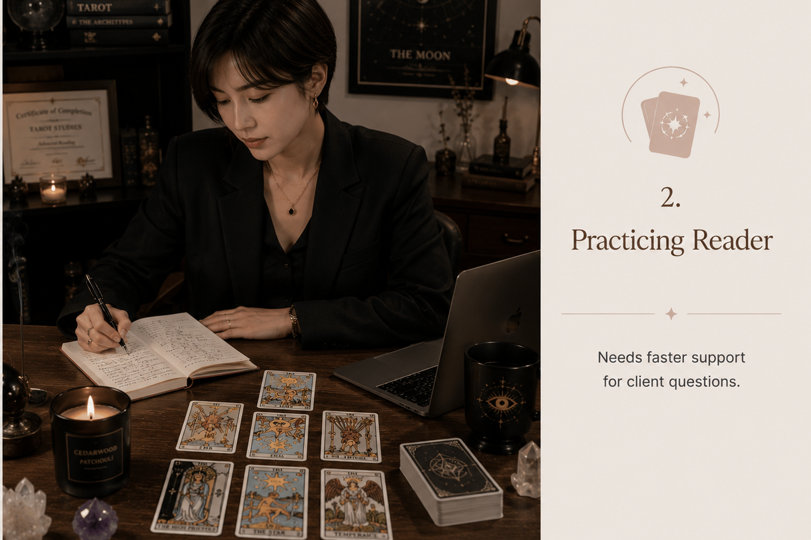
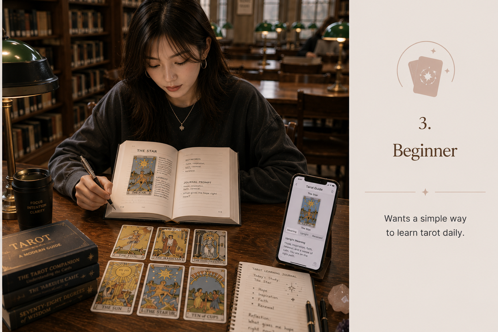
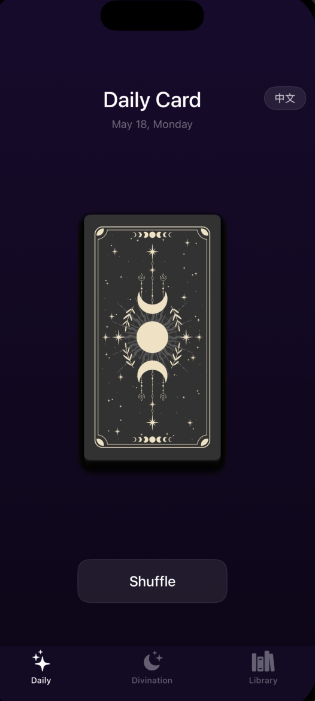
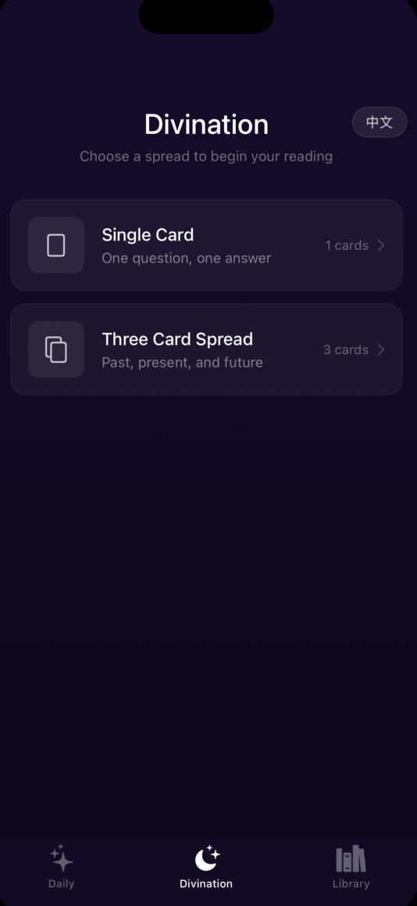
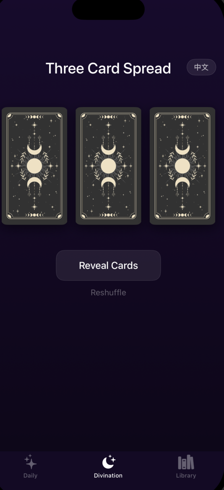
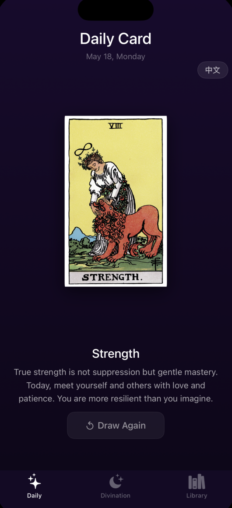
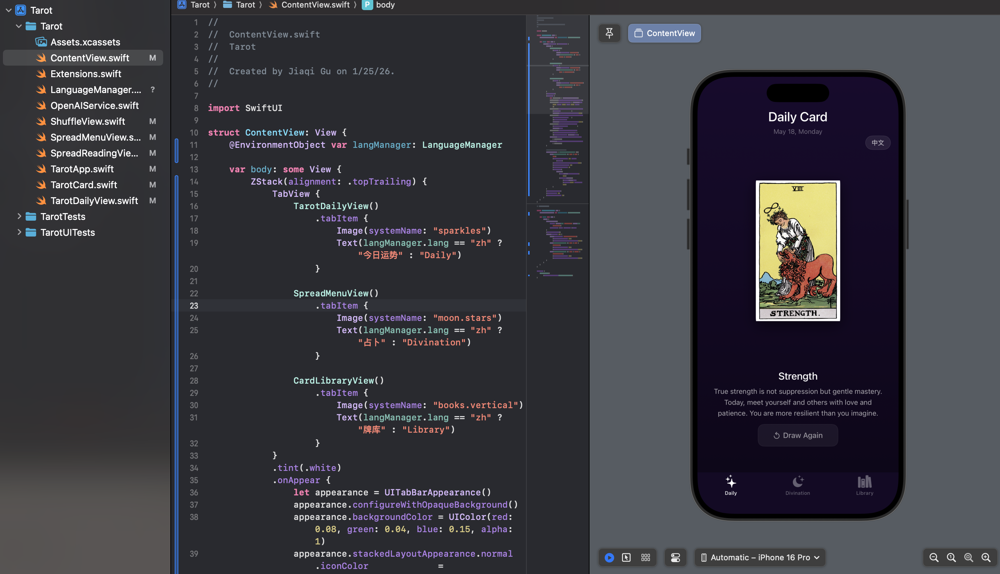

Mira Tarot
A full-featured tarot reading iOS app, designed and built solo for readers who can't always be there when their clients need guidance.
Overview
I've been reading tarot for years, for myself and for friends. But being available whenever someone needs a reading isn't always possible. At the same time, most tarot apps on the market feel either too generic or too shallow to replace a real reading.
This project started as a personal tool and grew into a full iOS app with AI-powered interpretation, designed to bridge the gap between a human reader and an on-demand experience.
The Problem
Tarot readers, myself included, often can't respond to clients in real time. A question that feels urgent at 2am doesn't wait until morning. And while messaging a reader is personal, some questions are small enough to be answered without a full session.
I validated this pain point with tarot practitioner friends who shared the same frustration: clients needed help, but immediate availability wasn't always realistic.

Who It's For
Three primary users shaped the design: tarot enthusiasts who want to do self-readings anytime, practicing readers whose clients need quick answers between sessions, and beginners learning the cards through daily practice.



What I Built
The app is structured around three core experiences, mirroring how people actually use tarot, not how apps typically present it.



Today's Reading
A daily card pull with personalized guidance, designed to become a quiet morning ritual. One card, one focus, one intention for the day.

Spread Readings
Eight spread options, from a single-card pull to the Celtic Cross, match the depth of the question being asked. Upright and reversed positions are randomized, just like a real shuffle.
Design Decisions
The UI uses a deep purple-black background, an intentional contrast to most apps which feel either too occult or too clinical. The goal was something that felt personal and calm, not theatrical.
Navigation is kept to three tabs, mirroring how readers think: today / a reading / the cards. No unnecessary layers.
AI Interpretation
The core insight: small questions don't need a 30-minute session. AI interpretation powered by OpenAI replicates the personalized, nuanced response a human reader gives, making it possible to get a real answer at 2am without waiting.
Process
Solo: design and development, AI-assisted.
Status
Core features are complete and currently in testing. AI interpretation is being built in parallel, with full integration expected within the next week.

Also Built: Mira Tarot Web
Alongside the iOS app, I built a gesture-controlled tarot website. Using your device camera, an open palm gesture draws the cards — the interaction is designed to feel physical, not digital. Try it yourself: